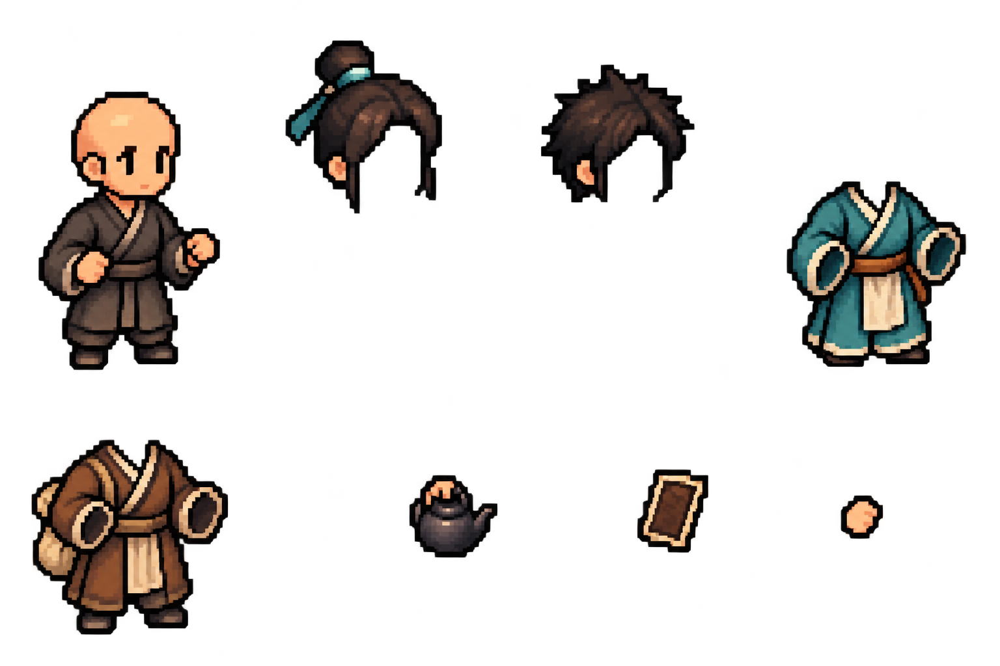

고정 자세 · 실제 부품 조합
하나의 배경과 몸에 헤어·의상·도구를 바꿔 겹친 화면입니다. 아래 그림은 결과별로 새로 생성한 완성 이미지가 아니라 브라우저에서 같은 재료를 조합한 것입니다.
재료 불러오는 중…
다른 부품 조합 예시
사용한 부품 원본 보기
기본 몸·헤어 2종·의상 2종·도구 2종·앞 손 레이어

아직 검수용입니다. 시트에서 분리해 겹치는 방식과 손 위치를 확인하며, 자동 생성 재료의 위치 오차는 보정 후 적용합니다. 본 앱에는 아직 연결하지 않았습니다.